8–9 Ekim gecesi ve 9 Ekim sabahı yapılanlar: ana ekran, Enter'dan sonraki animasyonlar, sohbet sırasında kurulan plan, fotoğraflar, harita, sohbetin konuşması ve yolda bulunan hatalar.
Gece yaptığım çerçeveli ana ekranı ve sağdaki "Adını ekle" köşesini beğenmedin. Eski ortalanmış düzene döndüm ve onu iyileştirdim: büyük soru, büyük kutu, altında başlangıç çipleri (emoji yerine çizgi ikonlar), arka planda yavaş kıpırdayan lavanta şekiller. Seyahatlerim ortada, gezi sayısıyla; geçmiş gezi varsa Yaklaşan · Geçmiş seçimi çıkıyor.
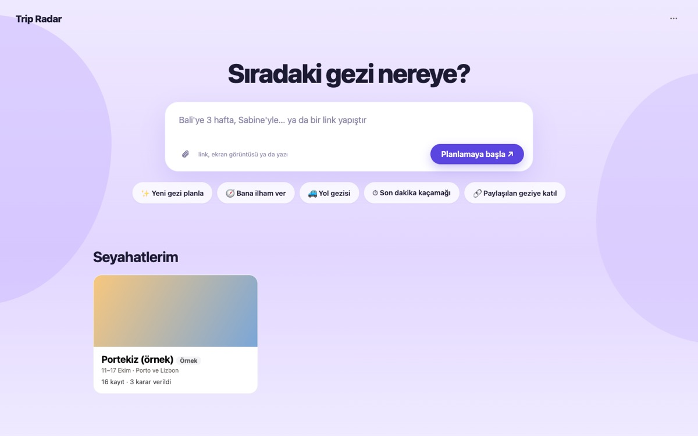
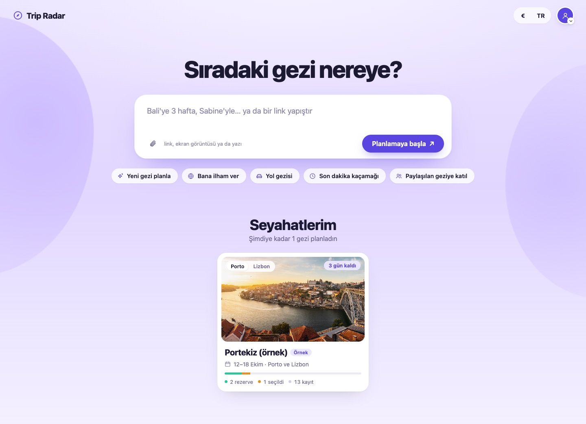
"Profilim" yazısı yerine profil resmi (yoksa kişi simgesi). Tıklayınca açılan menüde: kim olduğun ve hangi AI asistanının bağlı olduğu, Seyahatlerim, Profil ve fotoğraf, Ayarlar · AI asistanı, Paylaşılan geziye katıl, Örnek gezi, Geçmiş ve çöp kutusu. Yanında dil (TR / EN) ve para birimi (₺ € $ £). Para birimi dil gibi saklanıyor: gezinin kendi bütçe para birimi yoksa fiyatlar bu birimde karşılaştırılıyor, gezi sayfasındaki kur satırı da bu birimde yazıyor.
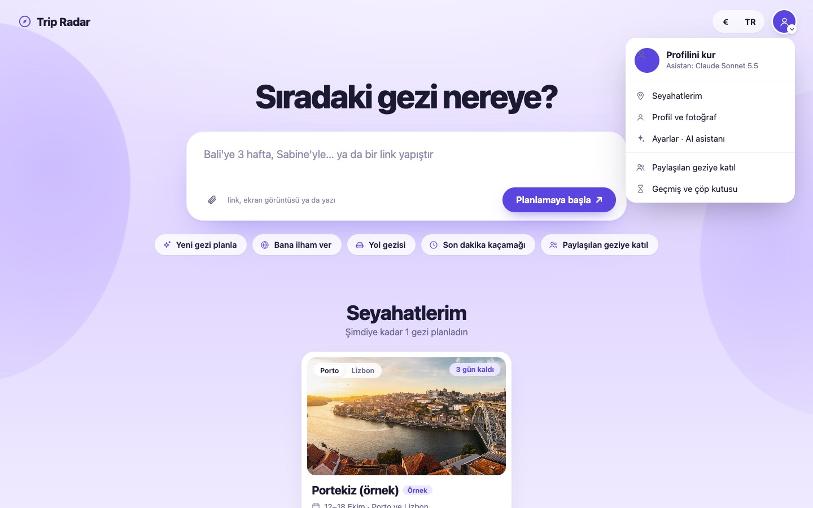
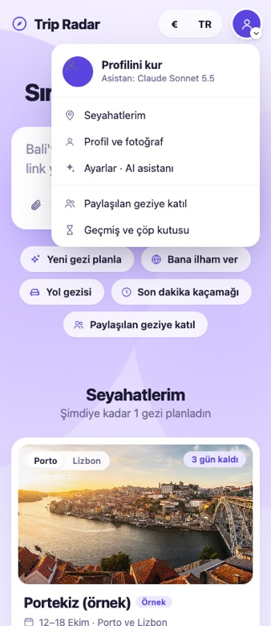
Yazdığın kutu, tarayıcının kendi geçiş animasyonuyla sohbetin ilk balonuna akıyor; sağ taraf bir an sonra kayarak geliyor. "Oluştur"dan panoya geçiş de yumuşak. Hareketi azaltma ayarı açıksa geçiş anında olur.
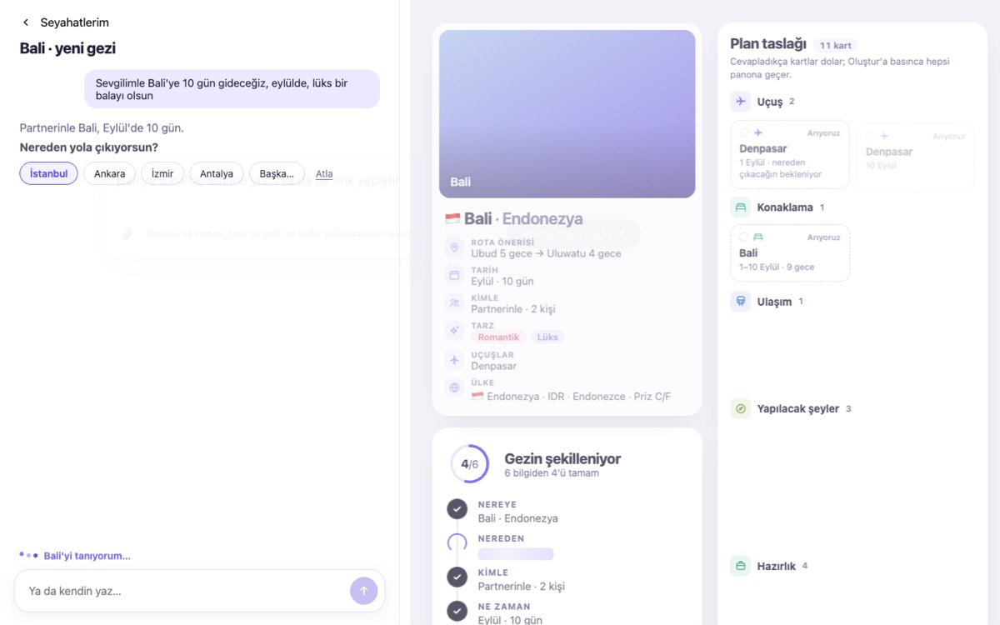
Sağda iki şey var. Solda gezinin fotoğrafları büyük ve sırayla, her birinin üstünde ne olduğu yazıyor. Sağda Plan taslağı: "Oluştur"a basınca yazılacak kartlar panonun bölümlerinde (Uçuş, Konaklama, Ulaşım, Yapılacak şeyler, Hazırlık) şimdiden görünüyor. Kesik çizgi "arıyoruz" demek; kartlar cevap geldikçe tek tek beliriyor.
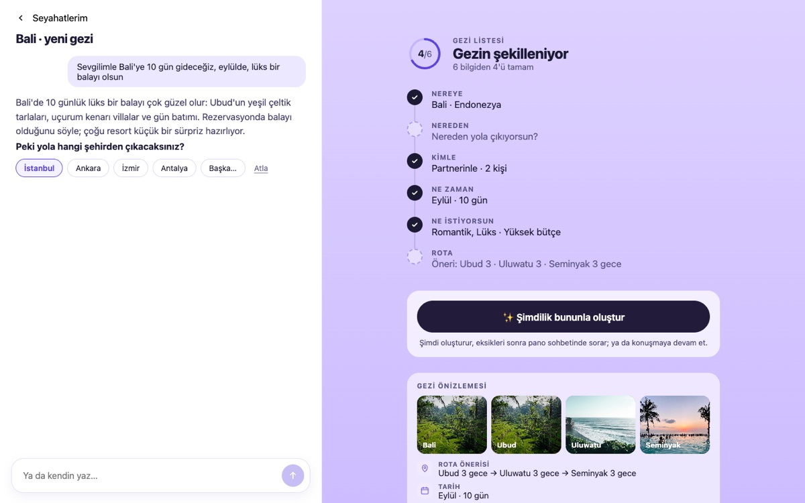
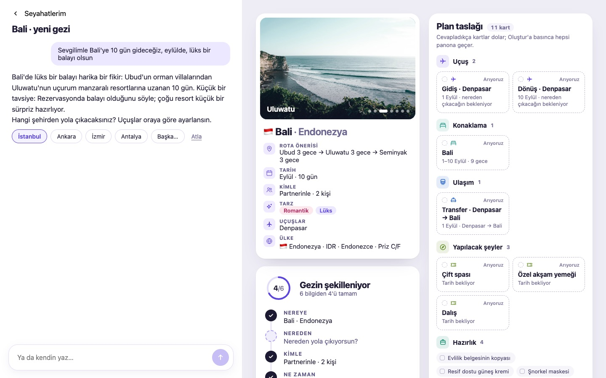
"İstanbul" seçildiği an iki uçuş kartı "Gidiş · Lizbon" ve "Dönüş · Lizbon"dan "İstanbul → Lizbon" ve "Lizbon → İstanbul"a döndü ve mor çerçeveyle parladı (yol haritasındaki K5 kuralı).
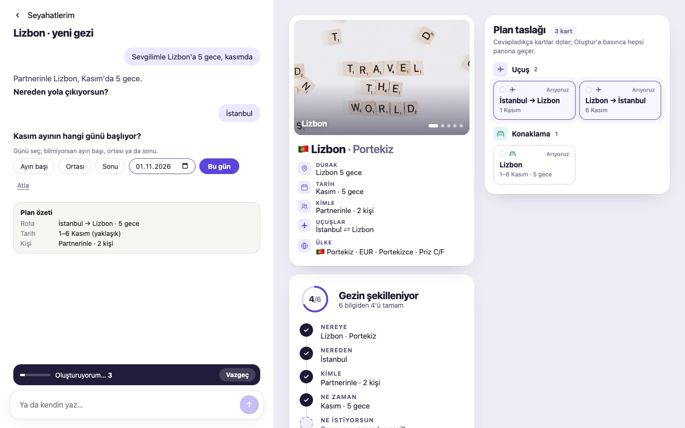
Araya bir soru sorarsan önce ona kısa ve dürüst cevap veriyor, emin değilse söylüyor. Sonra kendi sorusuna geçiyor: soru kalın, neyi açacağı yanında soluk. Gerçek modelle (Claude Sonnet 5.5) denendi, cevaplar 3,5 saniyede geliyor.
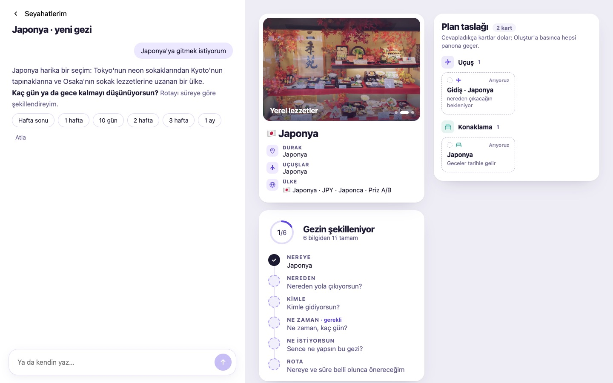
Uçak inince üç fotoğraf haritanın üstünde büyük açılıyor (bir yer, gezinin bir anı, bir yer daha), harita arkada soluyor. Soldaki sohbet donmuyor: her adım tikiyle yazılıyor. Öneriler artık beklenmiyor; pano yaklaşık 4,5 saniyede açılıyor, öneriler panoda gelmeye devam ediyor.
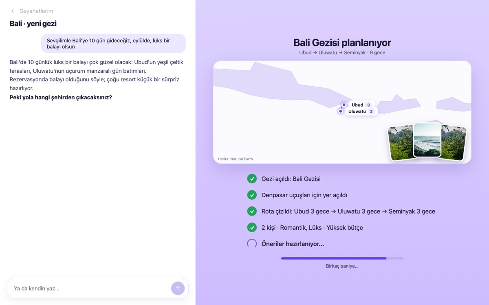
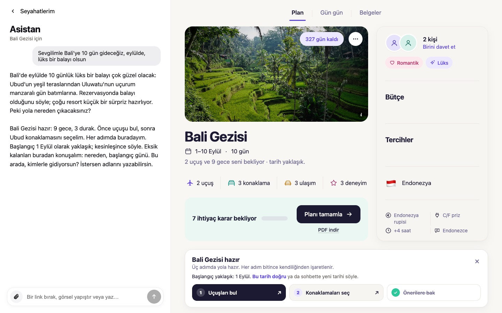
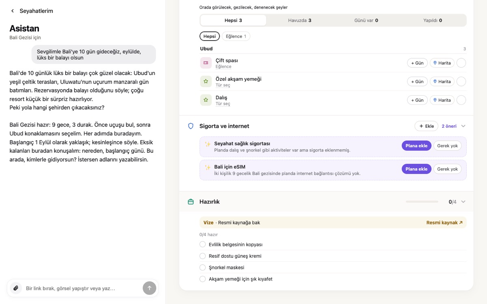
Ayarlar'dan Claude seçildiğinde pano sohbeti her mesajda hata veriyordu, başlatma sohbeti de gezi planını sessizce atlıyordu: plan şeması Claude'un katı JSON modu için fazla büyüktü. Bu durumda istek artık esnek modda yeniden gönderiliyor. Sonnet 5.5 varsayılan Claude modeli oldu; listede Sonnet 5.5, Opus 5.5 ve Haiku 5.5 var.
Sistem yayın komutunu senin onayın olmadan çalıştırmama izin vermiyor. Sırayla şu iki komut, ya da bana "yayınla" yazıp çıkan onayı vermen yeterli.
cd "/Users/emredurmus/Claude Folder (N)/trip-radar-gece" && scripts/release.shgit -C "/Users/emredurmus/Claude Folder (N)/trip-radar-gece" push origin gece-giris:claude/blissful-fermi-4zn4h6Bugün sıra: nereye → süre → başlangıç → nereden → kimle → gün → tarz → rota. Böylece temel bilgiler bitince gezi kendi kendine oluşabiliyor. K4'e tam uyum şöyle olurdu: tarih (gün dahil) → tarz/bütçe → rota → kimle → nereden. Denedim; gezi türüne özel soruların "temel bilgilerden sonra" kuralı değişiyor ve 36 test buna göre yeniden yazılmalı. Senin seçimin olmadan uygulamadım.
Fotoğraf sunucusu içinde insan olan fotoğrafları bilerek geri plana atıyor. Romantik akşam, gün batımı, villa sahneleri geliyor ama "sevgilimle" fotoğrafı gelmiyor. Değiştirmek sunucuda bir değişiklik ve canlıya yayın gerektiriyor; istersen yaparım.
Yapılmadı: Gemini anahtarın .env dosyasında yok. Eklersen aynı 6 cümleyi aynı kodla Gemini'de de çalıştırırım.